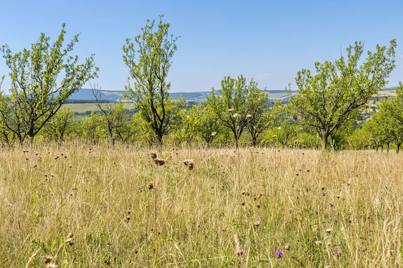
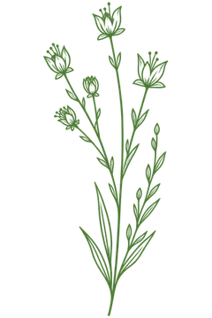
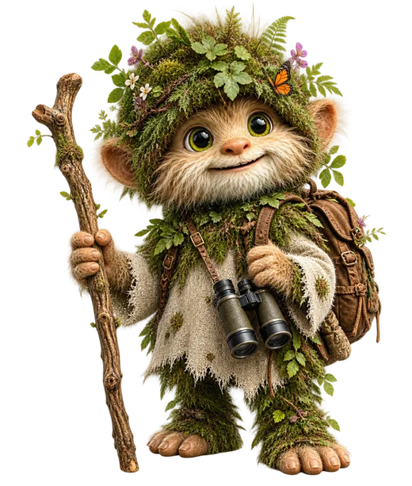
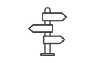
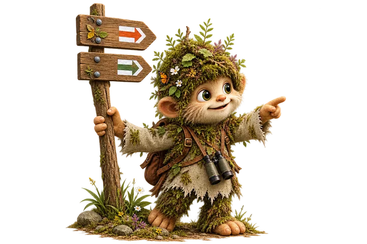
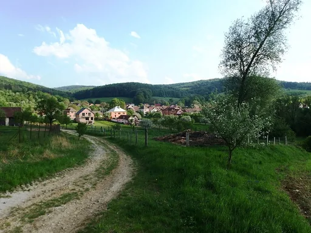
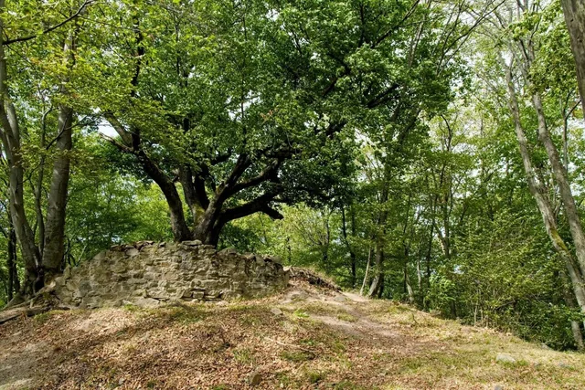
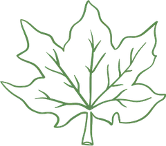

Zahrady pod Hájem

Vydejte se s dětmi za dobrodružstvím s Karpíkem do Zahrad pod Hájem! Provede vás krajinou starých sadů a bělokarpatských luk, kde na malé objevitele čeká spousta rostlin, zvířat i přírodních překvapení.

Objevujte společně Bílé Karpaty
Vydejte se s Karpíkem na rodinné výpravy do Bílých Karpat, při kterých se obyčejná procházka mění v cestu plnou objevů. Děti budou cestou poznávat zdejší přírodu, plnit hravé úkoly a objevovat, čím je krajina Bílých Karpat tak výjimečná.


Kam vyrazíme za dobrodružstvím?

Pojďte s Karpíkem objevovat Bílé Karpaty! Pro malé i velké dobrodruhy připravil výlety, na kterých se obyčejná procházka mění v cestu plnou objevů.
Společně budete poznávat louky, lesy i staré sady, hledat rostliny a zvířata, plnit hravé úkoly a postupně odhalovat příběhy zdejší krajiny.
Každá výprava ukáže dětem další kousek Bílých Karpat – a možná zjistí, že to největší dobrodružství začíná právě venku.
Prohlédněte si připravené trasy a vyberte si, kam se s Karpíkem vydáte. Stačí vám jen telefon a chuť objevovat!
Na začátku každé trasy najdete QR kód. Jeho umístění je uvedeno v detailu každé trasy. Naskenujte ho telefonem a dobrodružství s Karpíkem může začít!
Karpík vás bude provázet jednotlivými zastaveními. Čekají vás hravé úkoly, přírodní zajímavosti i malá překvapení.
Na konci každé trasy na vás čeká jedinečný symbol. Uložte si ho do telefonu jako vzpomínku na společnou výpravu.
Za čtyři nasbírané symboly z různých dobrodružství získáte odměnu a stanete se strážcem Bílých Karpat! Stačí uložené symboly ukázat na vybraném výdejním místě a odměna je vaše.

Vydejte se s dětmi za dobrodružstvím s Karpíkem do Zahrad pod Hájem! Provede vás krajinou starých sadů a bělokarpatských luk, kde na malé objevitele čeká spousta rostlin, zvířat i přírodních překvapení.


Vydejte se s dětmi za dobrodružstvím s Karpíkem do Hostětína! Provede vás kolem dřevěných soch v krajině až do přírodní zahrady, kde na malé objevitele čeká poznávání, hraní i nejedno přírodní překvapení.

Vydejte se s dětmi za dobrodružstvím s Karpíkem z Komně k tajemné zřícenině Zuvačova! Cestou objevíte zelenou Modrou vodu, ukryté prameny i starý javor, který střeží pozůstatky hradu. Na malé objevitele čeká poznávání, hraní a nejedno překvapení.
